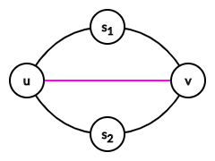

给定一个 $n \times n$ 的二维数组 $p_{i, j}$，满足：
请判断是否存在一张无向简单图，满足对于 $\forall 0 \leq i, j \leq n, i \neq j$，恰好有 $p_{i, j}$ 条从 $i$ 到 $j$ 的路径。
如果存在，并给出一组构造。
你需要实现以下函数：
int construct(std::vector <std::vector <int>> p)
build (见下文) 来给出构造，然后返回 $1$；否则返回 $0$，并且不要调用 build。该函数将被调用恰好一次。
函数 build 定义如下：
void build(std::vector <std::vector <int>> b)
首先，注意到 $p_{i, j} > 0$ 当且仅当 $i, j$ 连通。因此我们可以 (用并查集或搜索等) 根据输入的 $p$ 值划分连通块。
以下假设图 $G$ 连通。那么首先一个必要条件是 $p_{i, j} \neq 0$，否则显然无解。
下面我们证明：$G$ 中不存在一个拓扑子图同构于 $D_n$ (Dipole graph, 偶极子图) (其中 $n \geq 3$)。
反设存在一个 $D_3$，两个极点分别为 $u, v$。
由于 $G$ 为简单图，因此这三组重边中至少两组中间还有其它点进行 "细分"，如下图：
此时，考察顶点 $s_1$ 和 $s_2$，可以发现 $s_1, s_2$ 间存在至少 $4$ 条不相同的路径：$s_1 \leadsto u \leadsto s_2, s_1 \leadsto v \leadsto s_2, s_1 \leadsto u \color {fuchsia} \leadsto v \leadsto s_2, s_1 \leadsto v \color {fuchsia} \leadsto u \leadsto s_2$，与题意 $p_{i, j} \leq 3$ 矛盾。
因此 $G$ 中不存在这样的拓扑子图。
现在回过来考虑 $G$ 的每个点双连通分量。注意到一个点双连通分量除了 $P_2$ (两个点一条边的图) 和 $C_n$ (圈图) 外一定含有同构于 $D_n$ ($n \geq 3$) 的拓扑子图 (严格证明见 [Codeforces521E]Cycling City)。
于是 $G$ 的每个点双连通分量只有 $P_2$ 和 $C_n$，且 $G$ 连通 $\Rightarrow G$ 是仙人掌。
而且，若 $G$ 有 $\geq 2$ 个 (不相交的) 圈，因此考虑两个圈的端点，可知也至少有 $2^2 = 4$ 条不同路径，矛盾。
于是 $G$ 之多只有一个圈 $\Rightarrow$ $G$ 是树或基环树！
(ps: 可以发现所有情况下 $p_{i, j}$ 都不等于 $3$，因此一旦发现输入中有 $3$ 就可以直接无解了)
现在考察输入的 $p$ 数组，如果其中的元素都是 $1 \Rightarrow G$ 是树，那么随便输出一棵树 (链/星图等) 即可。
否则，$p$ 中存在 $2$。考虑关系 "两个点在同一棵外向树中" 可知其为一个等价关系，因此它一定会将所有点划分为若干个等价类，可以用并查集维护出这些等价类后得到若干棵外向树，再将其连起来即可。
当然，连完后需要判断得到的解是否合法：比如，如果一棵外向树中出现了 $2$，那么肯定不行；以及，如果外向树的个数恰好为 $2$，那么受囿于简单图的限制，也是无法做到的。
最后再将所有连通块的图求和即可得到结果，时间复杂度 $O \left( n^2 \right)$。
#include "supertrees.h"
#include <bits/stdc++.h>
#define EB emplace_back
using std::vector;
const int N = 1054;
int n;
int p[N], f[N][N], G[N][N];
vector <int> cc[N], ce[N], w[N];
int ancestor(int x) {return p[x] == x ? x : (p[x] = ancestor(p[x]));}
inline void connect(int x, int y) {p[ancestor(x)] = ancestor(y);}
inline void link(int x, int y) {G[x][y] = G[y][x] = 1;}
bool makeCC(const vector <int> &ps, const vector <vector <int>> &c) {
int i, j, k, la, U, V = ps.size(), top = 0;
for (i = 0; i < V; ++i)
for (j = 0; j < V; ++j)
if (!(f[i][j] = c[ps[i]][ps[j]])) return false;
std::iota(p, p + V, 0);
for (i = 0; i < V; ++i)
for (j = i + 1; j < V; ++j)
if (f[i][j] == 1) connect(i, j);
for (i = 0; i < V; ++i) ce[ancestor(i)].EB(i);
for (i = 0; i < V; ++i) if (p[i] == i) ce[i].swap(w[top++]), ce[i].clear();
if (top == 2) return false;
la = w[top - 1].front();
for (k = 0; k < top; ++k) {
U = w[k].size();
for (i = 0; i < U; ++i)
for (j = i + 1; j < U; ++j)
if (f[ w[k][i] ][ w[k][j] ] == 2) return false;
for (i = 1; i < U; ++i) link(ps[w[k][i - 1]], ps[w[k][i]]);
if (la != w[k].front()) link(ps[la], ps[w[k].front()]);
la = w[k].front();
}
return true;
}
int construct(vector <vector <int>> c) {
int i, j; vector <vector <int>> g; n = c.size();
for (i = 0; i < n; ++i) if (c[i][i] != 1) return 0;
std::iota(p, p + n, 0);
for (i = 0; i < n; ++i)
for (j = i + 1; j < n; ++j) {
if (c[i][j] != c[j][i] || c[i][j] == 3) return 0;
if (c[i][j]) connect(i, j);
}
for (i = 0; i < n; ++i) cc[ancestor(i)].EB(i);
for (i = 0; i < n; ++i) if (!(cc[i].empty() || makeCC(cc[i], c))) return 0;
g.reserve(n);
for (i = 0; i < n; ++i) g.EB(G[i], G[i] + n);
return build(g), 1;
}
坑1：注意处理基环树的时候如果外向树的个数为 $2$ 应该判定为无解，不要连出重边。
坑2：处理不同连通块的时候注意清空并查集，以及计算外向树时的并查集和计算连通块时的并查集是不一样的，如果实现不会需要开两个数组。